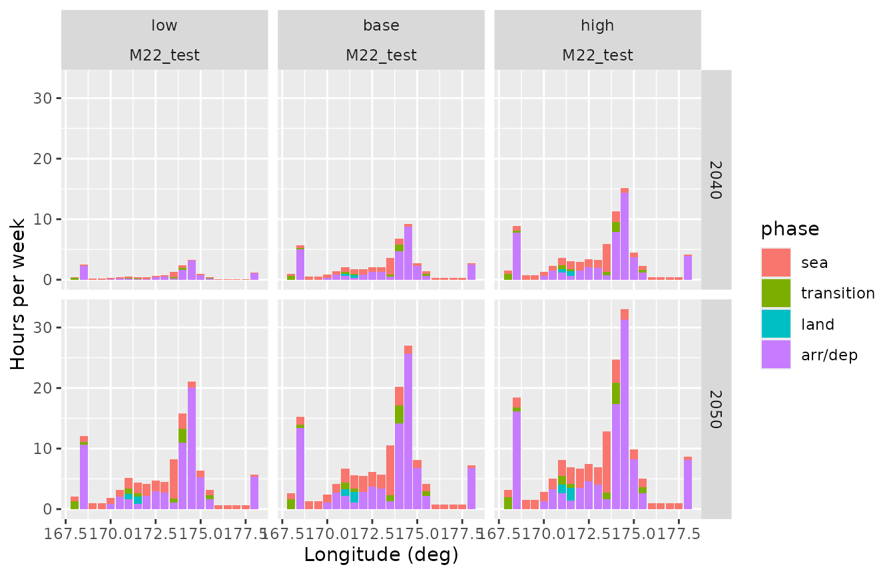
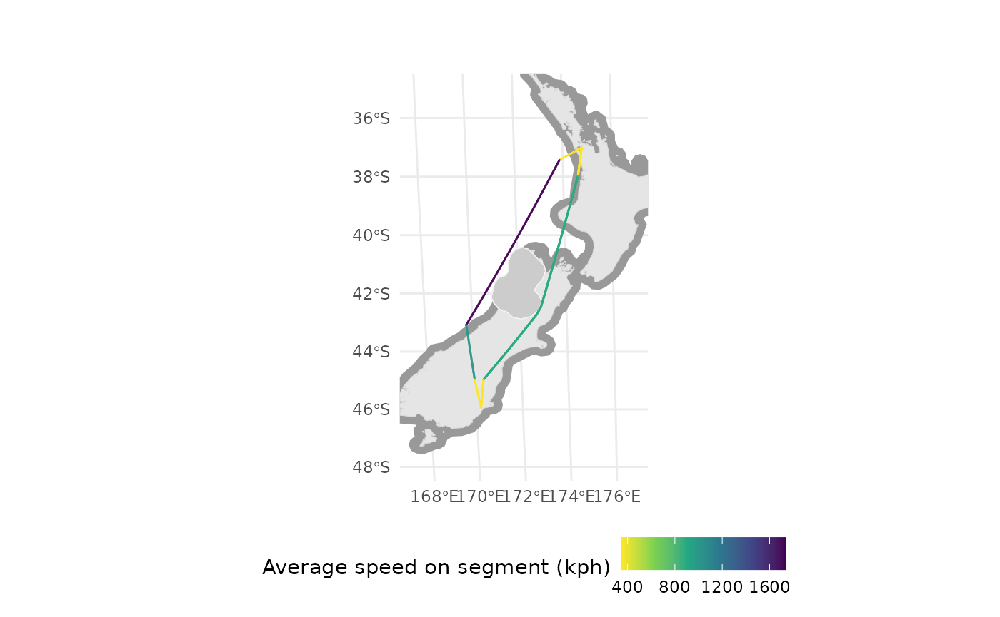

Advanced Supersonic Routing
David Marsh
2023-10-13
Source:vignettes/Supersonic_Routes_in_depth.Rmd
Supersonic_Routes_in_depth.RmdIntroduction
Supersonic Routes provides a
quick end-to-end introduction to using the himach package
and is the place to start. This vignette provides advice on more
advanced use, explaining details that the introduction skates over.
Much of this vignette is optional or for occasional use, but the advice on saving and reading the cache is likely to be essential for a speedy workflow, so that is described first.
#the libraries needed for the vignette are
library(himach)
library(dplyr, quietly = TRUE, warn.conflicts = FALSE)
library(ggplot2)
library(sf)
#> Linking to GEOS 3.10.2, GDAL 3.4.1, PROJ 8.2.1; sf_use_s2() is TRUE
# and we'll load a full set of test data
NZ_coast <- hm_get_test("coast")
NZ_buffer30 <- hm_get_test("buffer")
NZ_Buller_buffer40 <- hm_get_test("nofly")
NZ_grid <- hm_get_test("grid")
NZ_routes <- hm_get_test("route")Cache Management
himach uses caching to speed things up. Legs are cached
in route_cache and arrival-departure links to airports are
cached in star_cache (STAR is short for standard arrival
route, its counterpart being SID the standard instrument departure).
You will want to save and load the cache (meaning the combination of
route_cache and star_cache) as part of your
standard workflow. Quite where you save it is up to you, but a set of
routes is sensitive to (a) the route grid on which it is calculated (b)
the list of aircraft used, and their performance. The saving function
hm_save_cache forces you to refer to these two datasets,
and uses metadata from them in the file name for the cache.
If you change either of these, then you can use
hm_clean_cache() to empty the cache. You will also note
that if you run find_routes and the map has changed, or
findToCToD and the map or aircraft have changed, then the
cache will be cleared automatically.
For the vignette, we save to a temporary directory. You really don’t want to do this in practice ;-)
hm_clean_cache() #start without cache
# need to load some of the built-in data for this example
aircraft <- make_aircraft(warn = FALSE)
airports <- make_airports(crs = crs_Pacific)
#> Using default airport data: airportr::airport.
options("quiet"= 2) # for a little reporting
# how long does it take with an empty cache?
system.time(
routes <- find_route(aircraft[1, ],
make_AP2("NZAA", "NZDN", airports),
fat_map = NZ_buffer30,
route_grid = NZ_grid,
ap_loc = airports)
)
#> The legacy packages maptools, rgdal, and rgeos, underpinning the sp package,
#> which was just loaded, were retired in October 2023.
#> Please refer to R-spatial evolution reports for details, especially
#> https://r-spatial.org/r/2023/05/15/evolution4.html.
#> It may be desirable to make the sf package available;
#> package maintainers should consider adding sf to Suggests:.
#> Route:-NZAA<>NZDN----
#> Leg: NZAA<>NZDN Aircraft: SST M2.2
#> Cut envelope from lattice: 0.1
#> Calculated phase changes
#> Done recursion
#> Checking Shortcuts
#> user system elapsed
#> 1.304 0.080 1.385
# test saving of cache to a disposable directory
tmp_dir <- tempdir()
# for convenience, hm_save_cache gives the full name, including path
full_filename <- hm_save_cache("test_v", NZ_grid, aircraft, path = tmp_dir)
#empty cache - just to demonstrate the re-loading
# this isn't part of your normal workflow!
hm_clean_cache()
# but normally a session will begin with loading a cache like this
hm_load_cache(full_filename)
# how long does it take with a cache?
system.time(
routes <- find_route(aircraft[1, ],
make_AP2("NZAA", "NZDN", airports),
fat_map = NZ_buffer30,
route_grid = NZ_grid,
ap_loc = airports)
)
#> Route:-NZAA<>NZDN----
#> user system elapsed
#> 0.032 0.000 0.032
# if you want to see a map
# map_routes(NZ_coast, routes, crs_Pacific, fat_map = NZ_buffer30, simplify_km = 2)The cache just works invisibly in the background - you will notice it
speeds up finding of routes no end: in that example, from 1.5s (user) to
0.04s (user) on my machine. In particular, it helps with refuelling,
because the route_cache quickly remembers the routes from
major hub airports to the main refuelling points, so they don’t need to
be calculated again.
Incidentally, if you add a new refuelling point, then the cache
remains valid because only legs are cached, not
routes. With a new refuelling point, find_route
will check both old legs and new (to the new refuelling points), gaining
where the legs are cached, before selecting the best combination of legs
to make the route.
Cache housekeeping (advanced)
There may be times when you have built a large cache, of several
thousand routes for a handful of aircraft. If you want to make a change
to the performance of one aircraft, say, you either need to
hm_clean_cache() and start everything again, or do a bit of
housekeeping. The same is true if an airport location needs correcting:
ideally we delete all references to just that airport.
If you’re not comfortable housekeeping, then just let
himach run overnight to redo the whole thing.
Housekeeping involves loading the cache manually, with
load. It contains two environments route_cache
and star_cache (segments to and from airports). The items
in the cache are named with strings which capture a number of run
parameters, including the aircraft ID. So we identify items for
deletion, and rm them. Then save the cache manually with
save.
# for this example, add a second route to the cache
routes <- find_route(aircraft[2, ],
make_AP2("NZAA", "NZDN", airports),
fat_map = NZ_buffer30,
route_grid = NZ_grid,
ap_loc = airports)
#> Route:-NZAA<>NZDN----
#> Leg: NZAA<>NZDN Aircraft: SST M1.6 8.8
#> Cut envelope from lattice: 0.1
#> Calculated phase changes
#> Done recursion
#> Checking Shortcuts
# save the cache, which has NZAA-NZDN for 2 aircraft now
hm_save_cache("test_v", NZ_grid, aircraft, path = tmp_dir)
#now do housekeeping
load(full_filename) # filename from the previous chunk
ls(route_cache) # show the contents, just for information
#> [1] "M16_9-NZAA-NZDN--TRUE-TRUE-NA-TRUE-100-12"
#> [2] "M22-NZAA-NZDN--TRUE-TRUE-NA-TRUE-100-12"
# we want to delete instances of aircraft with ID that includes 'M22'
z <- ls(route_cache, pattern="M22") |> as.list()
length(route_cache) # before deletion
#> [1] 2
do.call(rm, z, envir = route_cache) # delete the M22 items
length(route_cache) #after deletion, 1 less
#> [1] 1
# then repeat for star_cache
z <- ls(star_cache, pattern="M22") |> as.list()
length(star_cache)
#> [1] 4
do.call(rm, z, envir = star_cache)
length(star_cache)
#> [1] 2
# then save the result (you might want to change the filename, or backup the old cache beforehand)
save("route_cache", "star_cache", file = full_filename)Extra Plots
Route density plots
The function map_routes does a reasonable job of showing
where the supersonic aircraft will fly, but it has two notable
limitations. Firstly, when you have scores or hundreds of routes, the
overlapping of routes begins to reduce the readability of the map.
Secondly, some routes are likely to be flown more often than others:
Paris-New York once a day, perhaps, while Copenhagen-New York only twice
per week.
In this vignette, we show how to plot the density of routes, taking into account overlap and flight frequency. While a density map might serve some needs, a simpler bar chart is a fairly clear way to summarise total quantity (of flown hours) by, say, latitude, which can be of interest for atmospheric modelling.
The process is fairly mechanical. We’ll either do a latitude or a
longitude bar chart, using a single function. We assume you’ve
calculated a set of routes, in which you have only one ‘best’ route per
acID and routeID (so have got rid of any
different refuelling options, for example).
The frequency of each is ‘1’ by default. Given the label ‘hours per
week’, this corresponds to 1 flight per week. If you want different
frequencies for each route, you need to pass a dataframe with 3 columns:
identifiers acID and routeID, and a value for
flights per week in flights_w which does not have to be an
integer. See the parameters for how to drop acID, say. If
you want flight hours per year, say, then you need to switch the values
in and name of freq_var.
If you’re running a forecast, you will have different routes and
frequencies in different years and different scenarios. The plot will be
faceted by year and scen_ord. These variables
should also be in your frequency dataset, and for faceting should be
factors or integer. We use scen_ord rather than
scenario to indicate an ordered factor, so that they can
always be plotted in ‘low, base, high’ order rather than
alphabetical.
hm_latlong_density <- function(rt, # route dataset created earlier
ll = "lat", #lat or long chart?
# frequency data, either 1 or
# dataset with at least 5 columns
freq = 1,
# 2 for joining
join_var = c("acID", "routeID"),
# 1 for value
freq_var = flights_w,
freq_lab = "Hours per week",
# and 2 for faceting
facet_rows = vars(year), #or use NULL
facet_cols = vars(scen_ord, acID),
# other plot configuration elements
bar_deg = 3, # width of bar plotted in degrees
resolution_deg = 1, # granularity of analysis, keep small
# ignore when flights are stationary (refuelling)
drop_zero = TRUE,
# return a graph, or a set of data
return_data = FALSE){
# graph of lat or long?
sel_coord <- ifelse(ll |>
stringr::str_to_upper() |>
stringr::str_sub(1, 2) == "LA",
2, 1)
coord_label <- ifelse(sel_coord == 2, "Latitude (deg)", "Longitude (deg)")
rt <- rt |>
ungroup() |> #just in case supplied dataset is grouped
# standard route dataset will have all of these
# each row is a great circle segment
# in particular time_h is the flight time in hours for the segment
select(phase, phaseID, gc, acID, routeID, speed_kph, time_h, crow) |>
mutate(seg = row_number()) # note this is ungrouped
# this is a graph of flight time, so ignore time spent on the ground refuelling
if (drop_zero) rt <- rt |>
filter(speed_kph > 0)
if (is.data.frame(freq)) {
# zoom in on the variables we need
freq <- freq |>
ungroup() |>
select(all_of(join_var), {{freq_var}}, scen_ord, year)
rt <- rt |>
inner_join(freq, by = join_var, relationship = "many-to-many")
} else {
rt <- rt |>
mutate(flights_w = 1)
facet_rows <- NULL
facet_cols <- vars(acID)
}
# split the great circle arcs into the graph resolution
rt <- rt |>
# ensure fine resolution
sf::st_segmentize(units::set_units(resolution_deg, degree)) |>
# drop the sf geometry, without dropping the gc column
sf::st_set_geometry("crow") |> # we only kept this to sacrifice it here
sf::st_drop_geometry() |>
group_by(across(!gc)) |> #don't want to lose any var in the reframe
# the reframe is to pull out either lat or long coordinate
reframe(coord = st_coordinates(gc)[ , sel_coord]) |>
group_by(across(any_of(c("seg", "scen_ord", "year")))) |> # now keep one entry per segment/resolution
# drop the last row if there's more than one, because we want to count line segments really
slice(1:max(1, n()-1)) |>
#round to the graph resolution
mutate(coord = resolution_deg * floor(coord / resolution_deg)) |>
distinct() |>
# time_h is the flight time in hours for the great circle segment
# now shared, after st_segmentize, amongst n() subsegments
mutate(time_h = {{freq_var}} * time_h / n(),
bar_coord = bar_deg * round(coord/bar_deg))
# then use geom_bar to add up the times, across all flights
g <- ggplot(rt, aes(bar_coord,
fill = phase,
weight = time_h)) +
geom_bar() +
facet_grid(rows = facet_rows, cols = facet_cols) +
labs(y = freq_lab, x = coord_label)
# orient appropriately for long or lat
if (sel_coord == 2) g <- g +
coord_flip()
if (return_data) return(rt) else return(g)
}We’ll show an example or two and then explain in a bit more detail how the graph ends up showing flight hours.
# simple case with default 1 flight/week frequency
hm_latlong_density(NZ_routes, facet_rows = NULL, facet_cols = vars(acID),
bar_deg = 0.5, resolution_deg = 0.1)
# make up a forecast of frequencies
freq_fc <- NZ_routes |>
# get the ac & routes we need the forecast for
select(acID, routeID) |>
st_drop_geometry() |> # convert from sf to tibble
distinct() |>
# add in some forecast years
tidyr::crossing(tibble(year = c(2040L, 2050L))) |>
# add in some scenarios
tidyr::crossing(tibble(scen_ord = ordered(c("low", "base", "high"),
levels = c("low", "base", "high")))) |>
# and some flights per week (that don't make a lot of sense)
arrange(year, scen_ord) |>
mutate(flights_w = row_number())
hm_latlong_density(NZ_routes, ll = "long",
freq = freq_fc,
bar_deg = 0.5, resolution_deg = 0.1)
These illustrate strong (mode) peak of flight demand around 41 degrees South and 174 degrees East.
To get the flight hours per week we use the time_h
property in the routes data. This gives the duration, in hours, to fly
the great circle arc in this row of the data. For graphing purposes, we
split each great circle row into multiple sub-arcs using
reframe, which is like summarise but you can
end up with more rows than you started with. We aim for significantly
smaller sub-arcs than the bar bin width (a sub-arc is just an arc). We
share time_h equally amongst those sub-arcs and extract the
start (lat or long) coordinate of the sub-arc. Multiply by the flight
frequency to get hours per week for each sub-arc. The
geom_bar then just adds up the hours per week for all the
sub-arcs (starting) in that bin. All this is summarised in the comments
in the function.
Route-finding details
No-fly zones
It is not unusual for parts of the airspace to be closed, or be
considered unsafe for flying. himach allows regions to be
marked as ‘avoid’. They will not feature in the grid, so routes will
avoid them, with one exception: an arrival or departure airport can be
inside a no-fly zone, as long as at least one connection point to the
grid is outside. So they might more precisely be called ‘no-overfly’
zones.
A no-fly zone is prepared in the same way as a map of land. If specific countries are to be avoided, this is where having a country name in the geographic data comes in handy.
One essential item is the avoid attribute of the no-fly
zone. This is used to distinguish sets of legs with different, or no,
no-fly zone. Set
attr(your_avoid_map, "avoid") <- "your summary of that avoid map"
which will (a) remind you what was used (b) tell himach to
recalculate all legs that have not already been calculated with that
value of avoid. If you were to add an avoid area for North
Korean airspace, say, then in reality North Atlantic routes are not
affected, but currently himach plays safe and assumes that
they are.
In this example, no offence is intended to the citizens of Buller District of New Zealand; it is a convenient example for showing how routes are forced to change when airspace is unavailable.
# using your own shp file
# NZ_Buller <- sf::read_sf("...../territorial-authority-2020-clipped-generalised.shp") %>%
# filter(TA2020_V_1 == "Buller District")
# NZ_Buller_u <- sf::st_union(sf::st_simplify(NZ_Buller, dTolerance = 1000))
# NZ_Buller_buffer50 <- sf::st_union(sf::st_buffer(NZ_Buller_u, 50 * 1000))
# attr(NZ_Buller_buffer50, "avoid") <- "Buller+50km"
# the quicker version, using a built-in no fly zone
# this uses data as in the previous code chunk
aircraft <- make_aircraft(warn = FALSE)
airports <- make_airports(crs = crs_Pacific)
#> Using default airport data: airportr::airport.
# run the same route, but with the avoid region
options("quiet"= 2) #just the progress bar
ac <- aircraft[c(1, 4), ]$id
routes <- find_routes(ac,
data.frame(ADEP = "NZAA", ADES = "NZDN"),
aircraft, airports,
fat_map = NZ_buffer30,
route_grid = NZ_grid,
cf_subsonic = aircraft[3,],
avoid = NZ_Buller_buffer40)
#> Route:-NZAA<>NZDN----
#> Leg: NZAA<>NZDN Aircraft: SST M2.2
#> Cut envelope from lattice: 0.1
#> Calculated phase changes
#> Done recursion
#> Checking Shortcuts
#> Adding subsonic, without range bounds.
#> Leg: NZAA<>NZDN Aircraft: 777-300ER
#> Calculated phase changes
#> Done recursion
#> Checking Shortcuts
#>
#> Route:-NZAA<>NZDN----
#> Too far for one leg.
#> Adding subsonic, without range bounds.
#>
#this shows versions of the legs with and without no-fly
# ls(route_cache, pattern = "NZCH", envir = .hm_cache)
# create route summary
rtes <- summarise_routes(routes, airports)
# draw a basic map
map_routes(NZ_coast, routes, crs_Pacific, fat_map = NZ_buffer30,
avoid_map = NZ_Buller_buffer40,
simplify_km = 2)
map_routes(NZ_coast, routes, show_route = "aircraft",
crs = crs_Pacific, fat_map = NZ_buffer30,
avoid_map = NZ_Buller_buffer40,
simplify_km = 2)Why do I have NA routes?
After a call to find_routes, the output can have
NA entries in some columns for some routes. There are two
reasons for this:
- This airport pair is too far for a single leg for this aircraft. If
you have given a list of possible refuelling airports
refuel = xxx, then you will find other entries for the samerouteID(eg “EGLL<>KSFO”) but with differentfullRouteID(eg “EGLL<>PANC<>KSFO”) showing a good route including refuelling. - One of the airports may be unreachable because all of the
top-of-climb (=top-of-descent) points are within an avoid airspace. You
will have received a warning message at the end of the run of
find_routes.
So these appear when the specified route is not possible.
Too many ocean routes: Buffer widths and projections
Above 60 or 70 (North or South), the approximations used by the
st_buffer function begin to show signs of exceeding their
limits. In particular, if you’re adding a 50km coastal buffer, for
example, there are separations between Canadian islands which are just
under 100km. Borden and Ellef Ringnes are examples. A buffer generated
by st_buffer shows the strait between them as open water,
where it should be closed.
This can lead to over-optimistic routings: supersonic where they should not be.
The solution is to use the links from sf to the
s2 package which come in more recent versions of the
sf package. This does require you to use quite a high value
for the max_cells parameter of
s2::s2_buffer_cells.
gr <- s2::s2_data_countries(c("Greenland", "Canada", "Iceland"))
gr_buffer_s2 <- s2::s2_buffer_cells(gr, distance = 50000, max_cells = 20000) %>%
st_as_sfc()
m_s2 <- ggplot(st_transform(gr_buffer_s2, crs_Atlantic)) + geom_sf(fill = "grey40") +
geom_sf(data = st_transform(st_as_sfc(gr), crs_Atlantic))
sf_use_s2(FALSE) # to be sure
gr_transf <- gr %>%
st_as_sfc() %>%
st_transform(crs_Atlantic)
gr_t_buffer <- gr_transf %>%
st_buffer(dist = 50000)
m_old <- ggplot(gr_t_buffer) + geom_sf(fill = "grey40") + geom_sf(data = gr_transf)
cowplot::plot_grid(m_old, m_s2, labels = c("bad", "good"),
ncol = 1)
Incorrect and Correct Buffer
In fact, the problem of finding too many apparently over-ocean routes is broader than this. The other main contributor to this is missing islands from the map. See the comments in the first vignette.
An example of this is in the same place. Some maps omit small islands (well, larger ones like Killniq down to tiny ones like Goodwin Island) at the mouth of the Hudson Strait. This affects the apparent width of the opening. Given the islands, and a 50km buffer, the Strait is not open as the next example shows.
This uses a non-CRAN, but public package of hi-resolution maps,
rnaturalearthhires. If you don’t want to load this package,
just note the results shown in the figure.
sf::sf_use_s2(TRUE)
hires <- sf::st_as_sf(rnaturalearthhires::countries10) %>%
filter(NAME %in% c("Greenland", "Canada", "Iceland"))
hires_buffer_s2 <- s2::s2_buffer_cells(hires, distance = 50000, max_cells = 20000) %>%
st_as_sfc()
m_hires <- ggplot(st_transform(hires_buffer_s2, crs_Atlantic)) +
geom_sf(fill = "grey40") +
geom_sf(data = st_transform(hires, crs_Atlantic))
cowplot::plot_grid(m_s2, m_hires, labels = c("good", "better"),
ncol = 1)Correct Buffer and with Better with More Islands
Why do I need a coordinate reference system?
There are a number of place in the vignettes, eg making an airport
dataset, where we have shown the use of a parameter to specify a
coordinate reference system. himach has recently
transitioned to using spherical geometry directly using the
s2 package, both directly and through the sf
package. Before s2 was available in sf there
was a constant need to align the coordinate reference systems of objects
before combining them.
Now, in theory, all geometrical operations use spherical geometry, so
a coordinate reference system should only be needed when you plot a map.
At that point, the coordinate reference system is saying how to move
from spherical coordinates to a flat projection. Four basic projections
are supplied crs_Atlantic, crs_Pacific,
crs_North and crs_South which you can use in
map_routes to get the right map for your particular set of
routes. You can create others as shown in the vignette.
We will remove remaining references to coordinate reference systems
during route creation in later versions of himach.